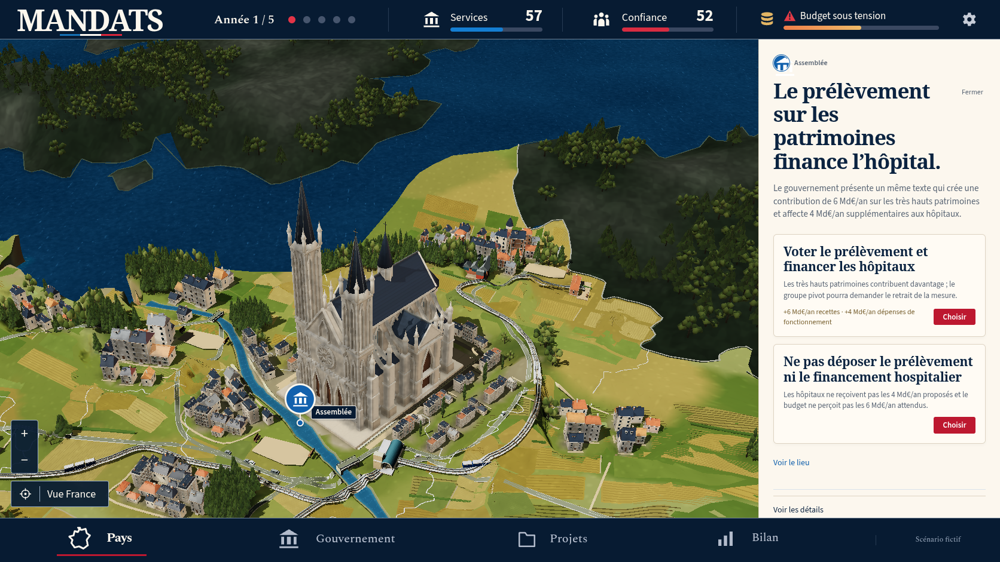
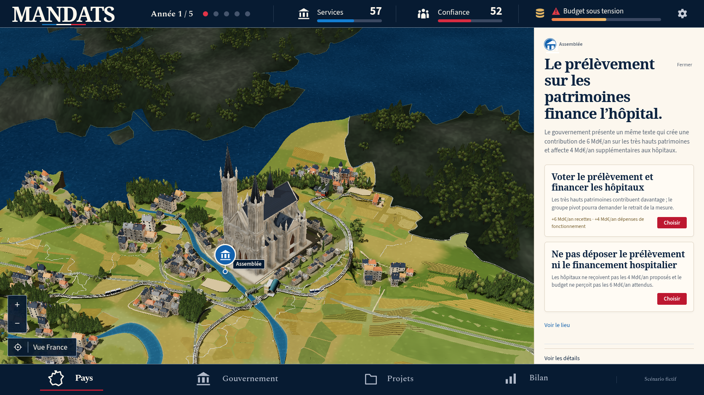
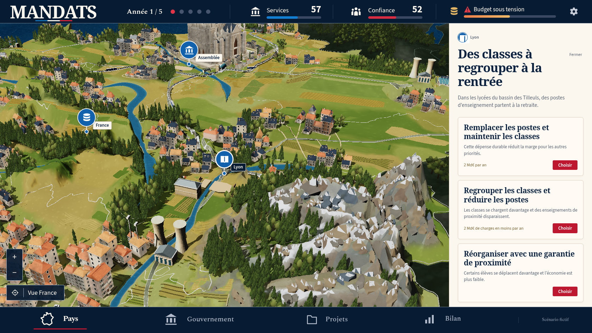
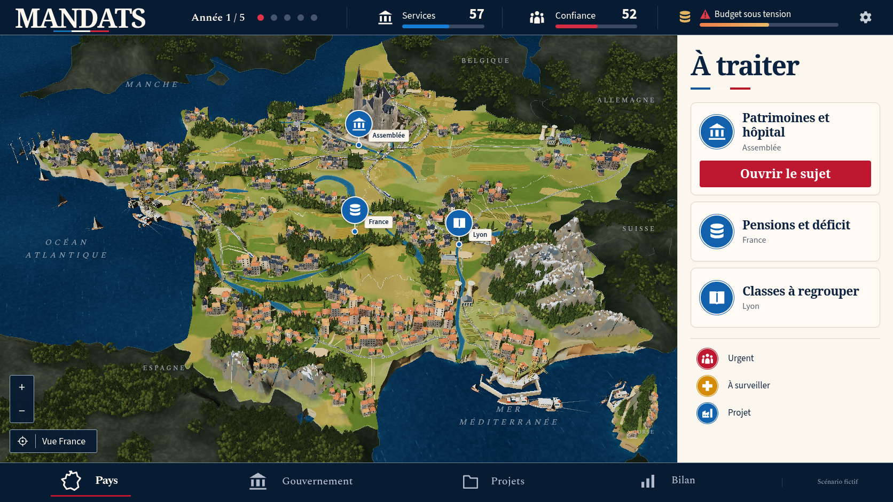

Passe 31 : Non conforme à la maquette
La référence confirmée et le jeu réel
La mer perd son halo cyan et les faces minérales retrouvent une lumière plus chaude. La neige et des parcelles composées sont plus visibles. La silhouette, le monument central et la richesse du paysage restent éloignés de la référence.
7 vues réelles, Chromium 151.0.7922.173, 1672 × 941, DPR 1, zéro décision. Erreurs JavaScript : 0 ; requêtes échouées : 0 ; erreurs HTTP : 0 ; avertissements console : 0 ; erreurs console : 0.
Référence confirmée

Vue nationale réelle

Vue nationale native31 : lumière et eau corrigées, silhouette encore non conforme.
Conditions et actions · Entrées de partieParis


Paris natif31 : pierre réchauffée ; monument trop haut et étroit.
Conditions et actions · Entrées de partieSeine et berges


Seine native31 : vraie inspection et quartiers issus du moteur.
Conditions et actions · Entrées de partieLyon et Alpes


Alpes natives31 : plaques de neige plus visibles, relief encore trop grossier.
Conditions et actions · Entrées de partieRetour national


Retour national natif31 après sept vues, zéro décision, erreur ou avertissement console.
Conditions et actions · Entrées de partieÉcarts observés
- La mer est plus marine et les halos continus sont supprimés ; la côte garde des secteurs minces et des faces trop lisses.
- Les plaques de neige couvrent davantage les hauts pans des crêtes angulaires. Les montagnes restent plus grossières et plus grises que les massifs de la référence.
- La pierre est plus chaude et les ardoises demeurent sombres. Le monument est encore trop haut et étroit, ses bases semblent proches de la référence.
- Les coteaux Touraine/Berry et Lorraine gagnent des pans verts et dorés. La campagne conserve de larges vides et des motifs trop réguliers.
- Le sud-ouest reste trop étroit ; la Corse présente une inclinaison opposée à la référence.
- Le cadre bleu nuit/ivoire reste proche ; année, scores et sujets proviennent de la partie réelle.
Preuves de capture · Build réellement servi · Revue enregistrée